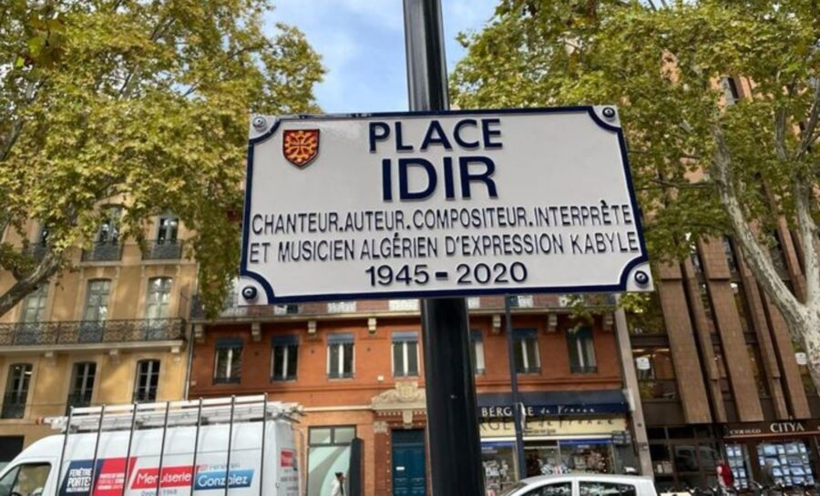
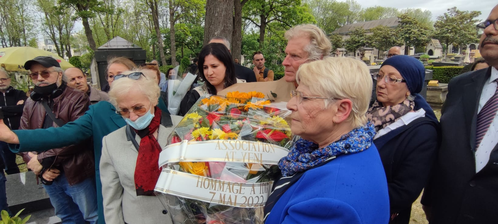
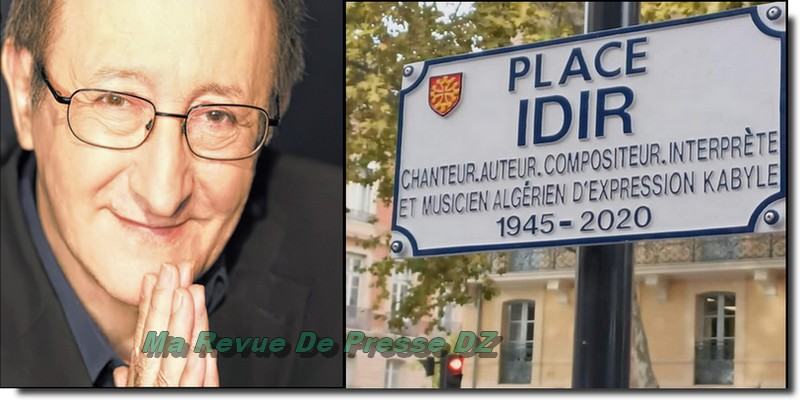
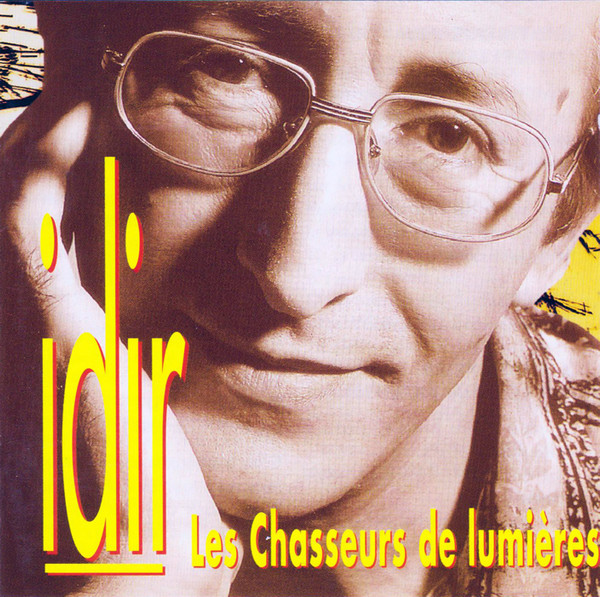
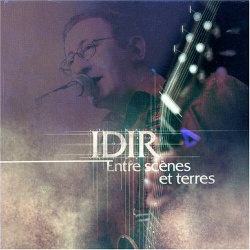
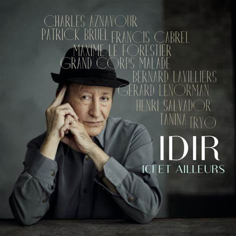

Idir, de son vrai nom Hamid Cheriet, est un chanteur et compositeur algérien né le 25 octobre 1949 à Ait Lahcene, en Kabylie. Il est célèbre pour avoir popularisé la musique kabyle et berbère, mêlant tradition et modernité. Son album "A Vava Inouva", sorti en 1976, a connu un immense succès et a contribué à faire connaître la culture berbère à l'international. Idir a su aborder des thèmes universels tels que l'amour, l'identité et l'exil. Tout au long de sa carrière, il a collaboré avec de nombreux artistes et a laissé une empreinte indélébile sur la scène musicale. Il est décédé le 2 mai 2020, mais son héritage musical perdure.
Idir a commencé sa carrière musicale dans les années 1970 en Algérie, où il a rapidement gagné en popularité grâce à sa voix unique et à ses compositions poignantes. Son premier grand succès, "A Vava Inouva," sorti en 1976, a marqué un tournant pour la musique kabyle, en la rendant accessible à un public plus large. Au fil des ans, Idir a sorti plusieurs albums, explorant des thèmes liés à l'identité, à la culture berbère et aux luttes sociales. Il a également collaboré avec de nombreux artistes, tant algériens qu'internationaux, enrichissant ainsi sa musique de diverses influences. Son style allie la tradition à des sonorités modernes, faisant de lui un ambassadeur de la culture berbère à l’échelle mondiale. Idir a continué à performer et à enregistrer jusqu'à sa mort en 2020, laissant un héritage musical profondément ancré dans la mémoire collective.
Actualité
Une place baptisée au nom d'Idir au centre de Toulouse
C'est une première depuis le décès en mai 2020 du chanteur et intellectuel algérien Hamid Cheriet1, connu sous le nom d'artiste d'Idir. La mairie de Toulouse a baptisé, le mardi 25 octobre, une place en plein centre ville au nom de ce chanteur d'expression.



Albums et réalisations



Événements passés
De la musique kabyle : Avec des titres emblématiques comme "A Vava Inouva", il a fait découvrir la musique berbère au grand public, tant en Algérie qu’à l'international.
Evènements marquants : Il a sorti plusieurs albums influents, dont "Les Chansons d'Idir" et "Nsi Nsi", qui ont renforcé son statut d'icône de la musique kabyle.
Thèmes engagés : Ses chansons abordent des questions d’identité, d’exil et de mémoire, touchant des générations entières.
Collaborations : Idir a travaillé avec de nombreux artistes de divers horizons, enrichissant sa musique de collaborations avec des musiciens arabes, français et africains.
Ambassadeur culturel : Il a joué un rôle clé dans la promotion de la culture berbère et a été un porte-parole des droits des Berbères, notamment à travers ses concerts et ses interventions.